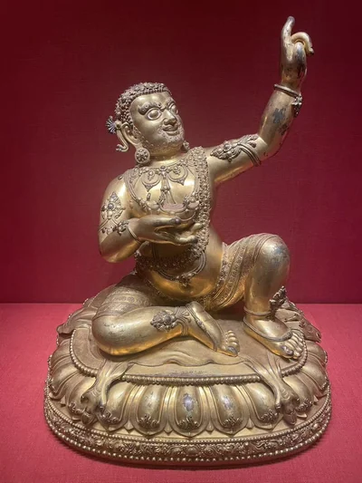
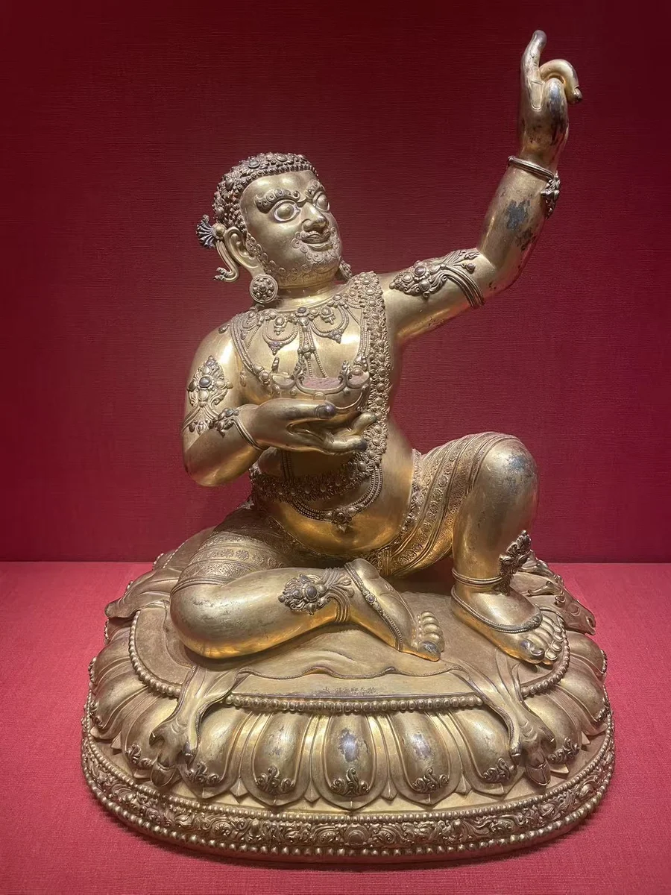
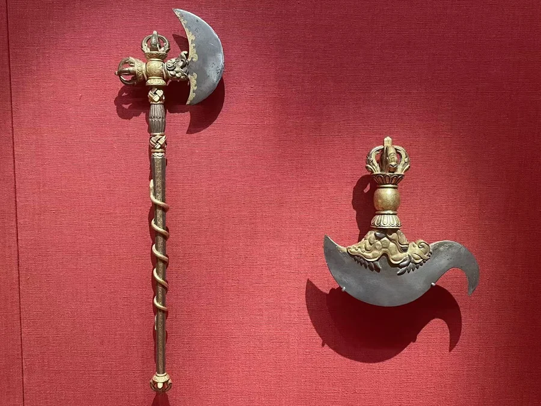

大成就者毗瓦巴
克利夫兰美术馆
23 / CLOSE LOOKING

宣德观音足边的赐款，把眼前的金属造像与宫廷赠献联系起来。它的身体略向一侧放松，莲瓣向下翻卷，铭文则位于靠近衣缘的窄小空间。与永乐时期的毗瓦巴及仪式器物并看，能够从不同用途理解宫廷与藏传佛教的联系。清宫六品佛楼组合，展示了另一种成体系的供奉秩序。 [21] [36]
细看：宣德观音足边赐款；毗瓦巴的指天手势；供像与仪式器物的关系。

图片按各自比例展示，实物不等大。

鎏金铜合金、银、宝石、彩
[21]
铁合金嵌金与银（斧）；钺刀依原签
[45]鎏金铜合金
故宫博物院收藏；本次照片的实际展出机构尚未确认。
[36]作品基本资料据现场展签及下列馆方记录整理；文字中的观看描述基于这里的现场照片。